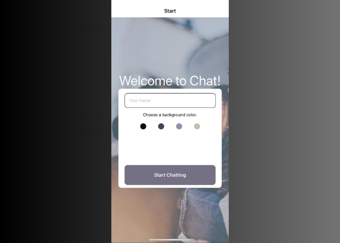

Chat App
Github Video LinkWorking with React Native and Gifted Chat, I built a chat app that allows users to communicate, see old messages, send pictures, and share their location.
Working with React Native felt like an easy transition from React. Once again, the value of imported libraries becomes very apparent and learning to understand their documentation and implement it correctly seems like one of the bigger skills to master as a developer.
- A page where users can enter their name and choose a background color for the chat screen before joining the chat.
- A page displaying the conversation, as well as an input field and submit button.
- The chat must provide users with two additional communication features: sending images and location data.
- Data gets stored online and offline.